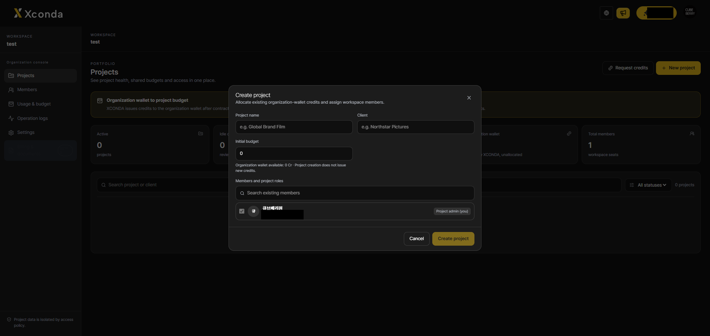
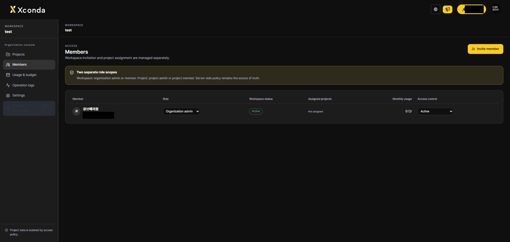

- Workspace = a room the team uses together
- Project = one bundle of work
- Member = a person who works with the team
- Credits = tokens you use in Xconda. They go down each time you use them.
- Organization wallet = a big wallet that holds credits for the whole company
- Budget = the amount of credits given to each piece of work
- Admin = a person who is in charge of a room or a piece of work and can make choices
- Reuse = use something you already made, and keep making from it
- Beta (Beta) = a stage that is still being tested. It is not finished yet.
- What is a workspace?
- Get started — ask for a consultation first
- Enter — choose, join, or create
- The admin screens at a glance
- Projects — see and create projects
- Members — members and roles
- Usage & budget — see how much you used
- Operation logs — see who did what
- Settings — change basic settings
- Share results and Reuse
- Questions people often ask
- Final checklist
1. What is a workspace?
A workspace is a room the team uses together.
It is not the same as using it alone. You can see the team’s work, members, and credits in one place.
The consultation page also says this. Manage team projects, members, and credits in one place.
On the first screen, you see this. Choose a workspace to manage projects, members and budget.
In easy words, it means this. “Choose a room to see work, members, and budget.”
| Words on the page | Easy meaning |
|---|---|
| Create and share team projects | You make team work. You share what you made with members. |
| Check project progress | You see how far the work has come, at a glance. |
| Adjust members freely | You can add members or remove them. You can change this at any time. |
| Give credits to each member | You share credits. You can also easily see who used how much. |
| What you can do | Easy explanation |
|---|---|
| Create a team project · Invite members | You make a bundle of work. Then you invite members. Inviting someone to the room and adding them to a piece of work are different. You do them separately. See Chapter 6. |
| Split a project budget | You split the credits in the big wallet by each piece of work. You can only create within the amount you were given. Splitting a budget does not make new credits. See Chapters 5 and 7. |
| See how much you used | You see it on the Usage & budget screen. You can see where credits came from. You can also see which piece of work they went to. |
| See records · Change settings | In Operation logs, you see records of important actions. In Settings, you change the company name, language, time, logo, and base color. |
| Share results · Reuse | You can see results you made. You can also download them. If you press Reuse on an image, you can keep making from it. But Reuse only works inside the same piece of work. You cannot bring it to other work. You cannot open it outside with a link either. This does not work in Beta 1. See Chapter 10. |
Project data is isolated by access policy. In easy words, it means this. “For each piece of work, the people who can see it are set. Not everyone can see everything.”
Workspace to go to your room. · The personal credit number at the top is covered with a black box. It must not be shown to others.2. Get started — ask for a consultation first
You do not sign up and use it right away. First, you ask for a consultation.
On the consultation page, you write and send a form. Then a reply email comes. It comes within 2 business days.
A business day is a day the company works. Weekends do not count.
The page title is Workspace consultation. The send button is Request consultation.

2-1. Before you apply, get these ready
- Get your company name ready.
- Get the name of the person in charge ready.
- Get your work email ready. The reply comes to your work email. Write an email you can check.
- Decide how many people will use it. You must fill in this field.
- Decide when you want to start. You can still apply if you do not have this.
- Write down what you want to ask. It is good to write why you want to use it. It is good to write what kind of work you do. It is good to write what you need. You may leave this field empty.
- You must agree to the use of your personal information. If you do not check the agreement, you cannot send the form.
2-2. What you write in the form
| Field name | Must you write it? | How do you write it? |
|---|---|---|
| Company name | Required * | You type it yourself. In the field, you see Enter company name. |
| Contact name | Required * | You type it yourself. In the field, you see Enter name. |
| Work email | Required * | You type it yourself. Example: [email protected]. The reply comes here. Check carefully that you did not write it wrong. |
| Phone number | Optional | You type it yourself. Example: 010-0000-0000. You may leave it empty. |
| Expected number of users | Required * | You choose from a list. In the field, you see Select. Check it yourself on the application screen. |
| Preferred start time | Optional | You choose from a list. Choose when you want to use it. |
| Message | Optional | You type it yourself. In the field, you see Purpose of use, main types of work, features you need, and so on. |
2-3. Agreement to use personal information — you must check it
Below the form, there is [Required] Consent to collect and use personal information. Read it and check it.
| Type | Words on the page |
|---|---|
| What do they take? | Company name, contact name, work email, phone number |
| Why do they use it? | Workspace consultation and reply. In other words, they use it to give the consultation and send a reply. |
| How long do they keep it? | Personal information is deleted 1 year after the consultation ends. |
2-4. What to do after you send it
- Press the Request consultation button.
- Wait. A reply email comes within 2 business days.
- If the email does not come, check your spam folder first. Then check that you wrote your email correctly.
- If you have a question about money or your account, ask Customer support.
3. Enter — choose, join, or create
Log in. Then go to xconda.ai/workspace. The Your workspaces screen opens.
It means “my workspaces.” It is a list of rooms you are in.
3-1. Open from the list
- One room is shown as one card.
- The card shows the room name. It also shows your role. It also shows the number of projects.
- Example:
Administratormeans an admin.0 projectsmeans 0 projects. - Press the
Openbutton on the card. You go to the admin screen for that room. At first, theProjectsscreen opens. - At the top right, there are 2 buttons.
Join workspaceandCreate workspace.

Your workspaces screen. You can see a room card. You can also see the Open button. You can also see the Join workspace and Create workspace buttons. · The personal credit number at the top is covered with a black box.3-2. Create a new room — Create workspace
- Press the
Create workspacebutton. ACreate a workspacebox opens. - There, you see
You become its first administrator.It means “the person who made it becomes the first admin.” - Write the company name in
Organization name. - Press the
Createbutton. The room is made. - A record of making it stays in
Operation logs. It saysOrganization created. See Chapter 8.

Create a workspace screen. You write the Organization name. Then you press Create. · The personal credit number at the top is covered with a black box.3-3. Join a room that is already there — Join workspace
There is a Join workspace button. Press it when you join a room that is already there. For how to invite members, see Chapter 6.
4. The admin screens at a glance
When you open a room, a menu is always shown on the left. Its name is Organization console. Think of it as the company admin menu.
At the very top, the name of the room you are in now is shown.
| Menu (name on screen) | Address | Easy explanation |
|---|---|---|
Projects | /workspace/projects | You see a list of work. You also see the state of the work. You also see the budget that was split. You also see who can see it. This is Chapter 5. |
Members | /workspace/members | You invite members. You set roles. This is Chapter 6. |
Usage & budget | /workspace/usage | You see where credits came from. You also see where they went. This is Chapter 7. |
Operation logs | /workspace/logs | You see who did important actions. You also see blocked requests. You also see budget changes. This is Chapter 8. |
Settings | /workspace/settings | You set the room name, language, time, logo, and base color. This is Chapter 9. |
Billing & documents BETA | — | You cannot press it yet. It is off. Bills and how to pay come in Beta 2. See Chapter 9. |
At the bottom left, Project data is isolated by access policy. is always shown. In easy words, it means this. “For each piece of work, the people who can see it are set.”
Being in the room does not mean you can see all the work. You must be added to each piece of work separately. See Chapter 6.
5. Projects — see and create projects
On the Projects screen, you see this. See project health, shared budgets and access in one place.
In easy words, it means this. “See the state of the work, the budget that was split, and who can see it, in one place.”
5-1. The 5 cards at the top
| Card (name on screen) | Easy meaning |
|---|---|
Active | The number of pieces of work you are doing now. |
Idle candidates | The number of pieces of work you should check once. Below it, you see review suggested. |
Archived | The number of pieces of work that are done and put away. It says read only. You can only see them. You cannot change them. |
Organization wallet | The credits left in the big wallet. The unit is Cr. It says issued by XCONDA, unallocated. In easy words, it means this. “XCONDA put them in. They are not split to any work yet.” |
Total members | The total number of members. Below it, you see workspace seats. |
5-2. The most important rule — split from the big wallet to work
Organization wallet to project budgetOn screen, you see this.
XCONDA issues credits to the organization wallet after contract or payment confirmation. Manage budget only allocates or returns credits already held in that wallet; it never buys or creates credits.In easy words, it is this. A contract ends. Or a payment is checked. Then XCONDA puts credits in the big wallet. Splitting a budget only moves what is already in that wallet. It only sends credits to work or brings them back. It does not buy credits. It does not make new credits either.

Projects screen. You can see 5 cards at the top. You can also see the big wallet note. · The personal credit number at the top is covered with a black box.5-3. Find work
- In the search box
Search project or client, write the name of the work. You may also write a client name. - Press
All statuses. You can choose and see by state. On the right, the total number of pieces of work is shown. - If there is no work at all, you see
No projects yet. Below it, you seeCreate a project to allocate budget and invite members.In easy words, it means this. “If you make a piece of work, you can split a budget and invite members.” - At the top right, there are 2 buttons.
Request creditsis pressed when you ask for more credits.+ New projectis pressed when you make new work.
5-4. Make new work — + New project → Create project
When you press + New project, a Create project window opens. There, you see Allocate existing organization-wallet credits and assign workspace members. In easy words, it means this. “Split the credits in the big wallet. Then add members to this work.”
| Field (name on screen) | What do you write? |
|---|---|
Project name | The name of the work. As an example, you see e.g. Global Brand Film. |
Client | The client name. As an example, you see e.g. Northstar Pictures. |
Initial budget | The amount of credits to give at first. You can only split as much as is in the big wallet. |
Members and project roles | The members to add to this work. You find them in Search existing members. You find them from members who are already in the room. The person who made it is shown as Project admin (you). It means “I am the admin of this work.” |
- At the bottom of the window, you see
Organization wallet available: ○○ Cr · Project creation does not issue new credits.In easy words, it means this. “There are ○○ Cr in the big wallet. Making work does not make new credits.” - To stop, press
Cancel. To make it, pressCreate project.

Create project window. You can see the Project name, Client, Initial budget, and Members and project roles fields. · Member emails and the personal credit number at the top are covered with black boxes.6. Members — members and roles
On the Members screen, you see this. Workspace invitation and project assignment are managed separately.
In easy words, it means this. “Inviting someone to the room and adding them to work are done separately.” Being in the room does not mean you are in all work on your own.
6-1. Roles are split in two
Two separate role scopesWorkspace: organization admin or member. Project: project admin or project member. Server-side policy remains the source of truth.In easy words, it is this. Roles are split into two layers. First is the role in the room. You are an admin or a member. Second is the role in the work. You are the admin of that work or a member of that work. What is set last is the rule on the server.
| Role for where? | Role (name on screen) | Where do you set it? |
|---|---|---|
| Room (workspace) | Organization admin / Member | You set it in the Role field on the Members screen. |
| Work (project) | Project admin / Project member | You set it when you make the work. You set it in Members and project roles. |
The same words are also on the Settings screen. In Beta 1, there is no separate screen to set roles. Still, the line between the room and the work is kept for every request.
A room admin can see all work in the room. They can split a budget or bring it back. They can manage members. They can put work away or take it out again.
But to create yourself in work made by someone else, you need a role in that work separately. It is the same for Reuse.
On the other hand, a person who makes new work becomes the admin of that work. That is what
Project admin (you) in the window to make work means.6-2. What you can see in the member list
| Field (name on screen) | Easy meaning |
|---|---|
Member | The member name and email. |
Role | The role in the room. In the example screen, it is shown as Organization admin. |
Workspace status | You see if they are active in the room now. Example: Active means they are active. |
Assigned projects | The work they were added to. If there is none, you see Not assigned. It means “no work has been added yet.” |
Monthly usage | The credits used this month. The unit is Cr. |
Access control | A field to set if they can come in. In the example screen, it is shown as Active. |

Members screen. You can see the member table. You can also see the note about roles. · Member emails and the personal credit number at the top are covered with black boxes.6-3. Invite a member — Invite member
- Press the
Invite memberbutton at the top right of theMembersscreen. - On the consultation page, it says you invite by email.
- When you invite, set two things first. Check that the work email is right. Then decide which work to add them to after you invite them. Inviting to the room and adding to work are different.
7. Usage & budget — see how much you used
On the Usage & budget screen, you see this. Trace where organization credits came from and how they move into project budgets.
In easy words, it means this. “See where credits came from. Also see which work they went to.” The button at the top right is Request credit.
7-1. You cannot change the amount left yourself
No balance editingThe organization wallet changes only through XCONDA issuance, project allocation, return or reversal transactions. Card checkout and billing documents are not part of Workspace Beta 1.In easy words, it is this. You cannot change the amount in the big wallet by hand. It only changes at set times. It changes when XCONDA puts credits in. It changes when you split credits to work. It changes when you bring them back. It changes when you undo something that was wrong. Paying by card does not work in Beta 1. Bills do not work in Beta 1 either.
7-2. The 4 cards at the top
| Card (name on screen) | Easy meaning |
|---|---|
Organization wallet | The credits left in the big wallet. It says XCONDA-issued, available to allocate. In easy words, it means this. “XCONDA put them in. You can split them to work.” |
Allocated budgets | All the credits split to pieces of work, added together. It is based on work you are doing now. |
Processing amount | Credits held for a short time because you are making something now. On screen, it says generation holds. |
Total usage | All the credits used so far, added together. It is based on all work. |
7-3. Graph, signals, and requests for more
Credit usage— a graph of how much you used. You see how the amount used changed.7Dmeans 7 days.30Dmeans 30 days. You change it with the buttons.Budget signals— budget signals. This is where you are told if the budget for each piece of work is okay. If work has not started yet, you seeCredit movements appear here once work begins.In easy words, it means this. “When work starts, credit movements will be shown here.”Project budget requests— a list of requests for more. When a piece of work asks for more budget, it is added here. If there is none, you seeNo project has asked for more budget.It means “no work has asked for more.”- If the budget is not enough. If a project budget is not enough, you can ask for more. A CubeBerry administrator issues the credits.

Usage & budget screen. You can see 4 cards. You can also see Credit usage, Budget signals, and Project budget requests. · The personal credit number at the top is covered with a black box.8. Operation logs — see who did what
On the Operation logs screen, you see this. Review sensitive actions, blocked requests and budget changes.
In easy words, it means this. “See important actions, blocked requests, and budget changes.” It is a record written down so you can check it later.
- The search box is
Search actor, action or target. You put in a person, an action, or a target to find it. - Records are shown as a table. There are 5 fields.
Timeis the time.Actoris the person who did it.Actionis the action that was done.Targetis the target.Resultis the result. - In the example screen, there is a record of making a room. The action is
Organization created. The result isSuccess. Success means it went well. In the time, the date and the time of day are shown together. - The
PDF export, Beta 2button at the top right cannot be pressed yet. Downloading as a PDF does not work in Beta 1.

Operation logs screen. You can see the Time, Actor, Action, Target, and Result table. · One person’s ID, the target ID, and the personal credit number at the top are covered with black boxes.9. Settings — change basic settings
On the Settings screen, you see this. Workspace identity settings. Billing and documents remain in Beta 2.
In easy words, it means this. “This is where you set basic facts about the room. Bills and documents are in Beta 2.”
9-1. Room facts — Workspace profile
| Field (name on screen) | Easy explanation |
|---|---|
Organization name | The company name. This name is shown in the room list and on the admin screens. |
Default language | The basic language. In the example screen, English is chosen. |
Time zone | The time standard. In the example screen, Asia/Seoul is chosen. Please know this. This is not just how it looks on screen. It is the standard that sets where a monthly total is cut. On screen, it also says This is the monthly aggregation boundary, not a display preference. Changing it moves every monthly total. If you change it, all monthly totals change together. |
Logo | The company logo. PNG or SVG, up to 512 KB. Only PNG or SVG files work. The size can only be up to 512 KB. Choose a file with Choose file. A file you chose is only used when you press Save. |
Base color | The base color. You write a color number. The color in the example screen is only an example for that company. You can use your own company color. |
If you changed something, be sure to press the Save settings button. You must press it for it to be saved.
9-2. The 3 note boxes on the right
| Box (name on screen) | Easy meaning |
|---|---|
Brand Kit boundary | Keep the company logo and base color here. Keep reference photos, characters, and the feel of a campaign in the Brand Kit for each piece of work. Do not mix them. |
Permission engine | In Beta 1, there is no separate screen to set roles. Still, the line between the room and the work is kept for every request. See Chapter 6. |
Billing & documents · BETA 2 | Bills, how to pay, and downloading documents come in Beta 2. They do not work now. |

Settings screen. You can see Workspace profile. You can also see 3 note boxes on the right. · The personal credit number at the top is covered with a black box.10. Share results and Reuse
On the consultation page, you see this. You can see results you made. You can also download them. If you do Reuse on an image, you can keep making from it.
- Who can see them? Results are inside that piece of work. Only people who can see that work can see them. On screen, it also says
Project data is isolated by access policy. - Reuse only works inside the same piece of work. You cannot bring results from other work and Reuse them. You cannot open them outside with a link either. This does not work in Beta 1.
- To create, you need a role in that work. Even a room admin cannot create if they do not have a role in that work. In work made by someone else, you cannot do Reuse either. See Chapter 6.
11. Questions people often ask
Q. Can I sign up and use it right away?
No. First, you ask for a consultation. See Chapter 2. When you send the form, a reply email comes. It comes within 2 business days. After you write it, you can open a room on the Your workspaces screen. You can also make a new room with Create workspace. See Chapter 3.
Q. What must I write in the form?
There are 4 things. Company name, contact name, work email, and expected number of users. You must also check the agreement to use personal information. You may leave the phone number empty. You may leave the preferred start time empty too. You may leave the message empty too. See Chapter 2.
Q. When I make a room, who becomes the admin?
The person who made it becomes the first admin. On screen, it also says You become its first administrator.
Q. Can a room admin create right away in all work?
No. A room admin can see all work. They can also manage budgets and members. But to create in work made by someone else, they need a role in that work separately. It is the same for Reuse. In work I made myself, I become the admin of that work on my own. See Chapter 6.
Q. If I invite a member, can they see all work?
No. Inviting someone to the room and adding them to work are different. On screen, it also says Workspace invitation and project assignment are managed separately. A person who was not added to a piece of work cannot see that work. In the list, it says Not assigned.
Q. Where do credits come from? Who puts them in?
A contract ends. Or a payment is checked. Then XCONDA puts them in the big wallet. On the admin screens, you can only split what is already there. You can also bring them back. You cannot buy credits. You cannot make new credits either. Making new work does not make new credits either.
Q. What if a project budget is not enough?
You can ask for more. A CubeBerry administrator issues the credits. See Chapter 7.
Q. Can I change the amount left myself, or pay by card?
This does not work in Beta 1. The big wallet only changes at set times. It changes when credits are put in. It changes when you split them. It changes when you bring them back. It changes when you undo something. On screen, it also says No balance editing. Paying by card is not in Beta 1. Bills are not in Beta 1 either. Bills and how to pay come in Beta 2.
Q. Can I Reuse an image from other work?
No. In Beta 1, it only works inside the same piece of work. You cannot bring it to other work. You cannot open it outside either.
Q. Can I download records as a PDF?
Not yet. On the button on the Operation logs screen, it says PDF export, Beta 2.
12. Final checklist
Order matters. First, ask for a consultation. Next, set the room and the work. Next, invite members and add them to work.
- Did you ask for a consultation with the company name, contact name, and work email written correctly?
- Did you choose the expected number of users as the number of people who will really use it?
- Did you read the agreement to use personal information and check it? Did you see what they take? Did you also see why they use it?
- Did you make a room? Did you decide who the first admin is? (
Create workspace→Organization name) - Did you decide how to split the work? You can split it by piece of work or by client.
- Did you decide how much to give each piece of work at first? You can only split as much as is in the big wallet. (
Initial budget) - Did you check the work email of the member you will invite? Apart from inviting them to the room, did you also decide which work to add them to?
- Does a room admin need to work in someone else’s work? If so, did you also give them a role in that work?
- In
Settings, did you set the company name, basic language, time standard, logo, and base color? Did you pressSave settings? The time standard sets the monthly total. - Did you decide who will see
Usage & budgetandOperation logs, and how often? - Did you take out the things that do not work in Beta 1 from your company guide? Paying by card, bills, downloading a PDF, Reuse to other work, and opening outside do not work.